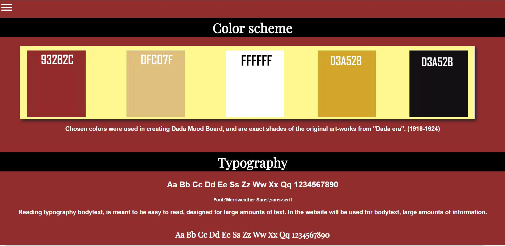

This was my first responsive website. I have never had expierience in coding before in my life, therefore it was quite a challenge for me. You can still see that in some places the website is not perfect, but I think it is okay, because it is a part of a porcess of learning.
This project was based on a given style(dadaism) that I had to stick to. It was a bit difficult to achieve good looking website with this style as in my opinion it is a bit hectic and rough.
But I enjoyed having to go through these obsicles, because in real work, when I will be employed as a graphic designer, I will have to stick to different styles my clients will have in mind and I will have to know how to make it look good even if the chosen style by the client is not my favourite.
I learned how to code a burger menu, it was a game changer, because it made the website look more clean.
You can see, that I did not know how to use grids, and therefore the website looks a bit messy and difficult to overlook
